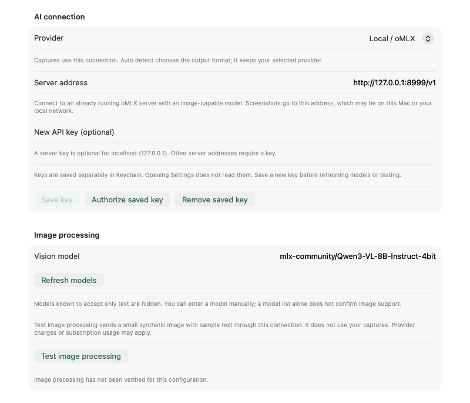
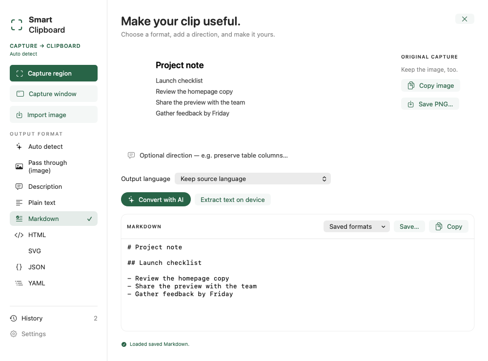

Using Smart Clipboard
Set up once. Capture. Wait for Clip ✓. Paste. The app stays in the menu bar until you ask to open it.
This illustrated guide covers 0.4 preview build 15. Screenshots show current app views with sample data; select one to enlarge it.
Jump to local AI, picture tracing, translation or troubleshooting.
Install and start
- Download the signed DMG, open it and drag Smart Clipboard into Applications.
- Eject the DMG, open the installed app and find Clip in the menu bar. There is no Dock icon or window to keep open.
- Open Clip → Settings & Status for setup. Enable Launch at login in General if you want it ready when your Mac starts.
Requires Apple Silicon and macOS 14+. Closing Settings leaves shortcuts working; Clip → Quit Smart Clipboard stops the app.
Capture, wait, paste
| Step | What to do |
|---|---|
| Capture an area | Press ⌃⌘R and drag a rectangle. |
| Capture a window | Press ⌃⌘W and click the window. |
| Wait | Clip … changes to Clip ✓ when the result is copied. |
| Paste | Press ⌘V in your destination app. |
⌃⌘R means hold Control + Command and press R; ⌃⌘W uses W. These defaults start in build 15. Saved shortcuts take precedence, including bindings kept from older versions; view or record a replacement in Settings → Shortcuts. Space switches selection modes and Escape cancels. A failed or cancelled operation leaves your previous clipboard contents intact.
Allow Screen Recording when macOS asks. You can also choose Request screen access in Shortcuts; reopen the app if macOS requests it. Capture does not open Settings or the editor.
Choose the output once

| Preferred format | What you get |
|---|---|
| Auto detect | AI chooses a useful editable format from the image. |
| Pass through (image) | The original image, without extraction or AI. |
| Plain text / Markdown | Editable words, notes, headings or tables. |
| JSON / YAML / HTML | Structured data or markup source. |
| SVG | Local shape tracing or AI reconstruction. |
| Description | A written description of the image. |
Default direction adds instructions such as “Preserve table columns.” AI results, HTML and SVG are copied as text; the app does not render or execute generated markup. Review AI output before using it.
Set up local image processing with oMLX
{kind=link}

- Install and start oMLX. Download mlx-community/Qwen3-VL-8B-Instruct-4bit as a starting point.
- In Settings → Connection, select Local / oMLX. Enter your server’s address ending in
/v1; the picturedhttp://127.0.0.1:8999/v1is an example, not a universal port. - Click Refresh models and choose the exact listed vision model. The server may omit the
mlx-community/prefix. - If your server needs a key, enter it and choose Save key. A server on another computer requires a key; use HTTPS outside a private local network.
- Click Test image processing. It uses a generated sample, not your screen. Then choose your preferred output in General and close Settings.
Keep oMLX running for AI extraction. Smart Clipboard does not download models, start the server or fall back to a cloud provider. Local Trace on device and Pass through work without oMLX.
Choose a local model
Start with Qwen3-VL-8B-Instruct-4bit for text, tables and translation. The larger 32B model did not solve the Description/SVG errors in our tests. For tracing a picture, use Trace on device—no model needed.
The tested server is official oMLX 0.7.0.dev2. Version 0.6.4 has a structured-output bug with this vision model; a larger model does not fix it. Newer server versions have not been covered by these tests.
Model sizes, memory guidance and test results
The following are 4-bit MLX Community conversions of Qwen image-capable models. Copy the full download ID into oMLX's downloader:
| Download ID and model card | Disk download | Status on 22 September 2026 |
|---|---|---|
| mlx-community/Qwen3-VL-8B-Instruct-4bit | About 5.78 GB in the publisher's file listing. | Smaller starting point for local evaluation. Text, tables and structured data worked on tested synthetic images; Description invented spelling observations and SVG changed aspect ratio, borders or layout. It has not passed all-format quality acceptance. |
| mlx-community/Qwen3-VL-32B-Instruct-4bit | Verified download: 19,636,446,591 bytes across 19 files, about 19.64 GB / 18.29 GiB. | Tested with oMLX 0.7.0.dev2. It preserved the test values, but Description invented alignment details and SVG used the wrong canvas and added a table row. Six prompt probes improved canvas dimensions without resolving content/layout errors. It has not passed all-format quality acceptance. |
The measured 32B download matches publisher revision 6e5644d. Sizes describe disk downloads, not running memory use.
Memory planning estimates: allow at least 16 GB unified memory for the 8B candidate or 48 GB for 32B, with additional headroom for larger images, context and other apps. These are conservative estimates, not verified minimum requirements or speed guarantees. The recorded tests used a 128 GiB Mac; lower-memory Macs have not been validated. Keep extra disk space available for server caches. Start with a small non-private sample and check the output before relying on either model.
For observed outputs and the distinction between automated checks and visual quality, see the local test evidence. Description and SVG remain experimental in this preview and have not passed all-format quality acceptance.
Choose another connection
For OpenAI, Anthropic, Google Gemini or Perplexity, select the provider in Connection, enter its API key, choose Save key, select an image-capable model and run Test image processing. API access and billing are separate from consumer chat subscriptions. Each provider retains its own settings and key.
For ChatGPT via Codex, follow Install / update Codex CLI, then Sign in with ChatGPT. Leave Codex executable blank for automatic discovery and run the image test after sign-in. An eligible Codex account and compatible official CLI are required; subscription limits apply.
If a saved key needs approval after an update, choose Authorize saved key explicitly. Background captures never open a Keychain dialog. Cloud routes are not all live-verified in this preview; see connection status.
Trace a picture to SVG

Trace photos, logos and drawings on your Mac
- In Settings → General, set Preferred format → SVG and SVG method → Trace on device.
- Choose Photo, Logo or Line drawing to match the image.
- Start with Balanced detail. Detailed keeps more shapes and colours but makes larger files.
- Close Settings, capture, wait for Clip ✓, then paste.
Tracing works offline with the included VTracer helper—no API key, model, server or extra installation. It follows visible shapes, keeps the background and turns words into outlines. It does not translate, remove backgrounds or recover chart data. Directions do not apply, and a failed trace never switches to AI.
To use it in a vector editor: open the capture in History, choose Save…, then open or import the .svg file. Pasting into a text editor shows SVG source code. Large SVGs show a compact summary in Smart Clipboard while keeping the complete result available to Copy or Save.
Trace an earlier screenshot
Open Clip → History → Open, choose SVG → Trace on device, set the preset/detail and choose Trace to SVG. Use Copy or Save…. Each method, preset and detail combination keeps its own saved result. These manual choices do not change your automatic capture preferences.
Reconstruct with your AI connection
Choose SVG → Reconstruct with AI to have your configured model interpret and rebuild a diagram or illustration. It can follow directions and language preferences, but may change or invent details. Test your AI connection first and compare the result with the original.
Languages and translation
In General → Languages → Capture output, choose:
| Choice | Result |
|---|---|
| Keep source language | Preserve the language detected in the image. This is the default. |
| System language | Translate AI captures into your Mac’s preferred language. |
| A specific language | Translate independently of the Mac’s language. |
An explicit choice overrides translation directions. Older settings may show Use saved directions until you choose a language. Changes apply to the next capture. Model quality varies; check translations and extracted values.
The interface separately follows macOS in English, Italian, Spanish, French or German, falling back to English. Restart the app after changing its interface language. Pass through, local tracing and Extract text on device do not translate. Source-language descriptions use English when no readable text identifies a language.
Reuse a previous capture

Choose Open, another format or Output language, then Convert with AI. For offline OCR, choose Extract text on device; for vectors, choose Trace to SVG. Saved formats loads a previous result without processing again.
{kind=link}

Choose Copy when you want that result on the clipboard, or enable Copy after manual conversion. Repeating the same format/language replaces only that version; other versions remain.
In Settings → History, set the limit (50 by default, up to 500), delete an entry or clear all. Zero clears and disables history. Deleting history does not remove exported files or change the clipboard.
Completion and failure notifications
In General → Capture notifications, choose Enable notifications and allow the macOS prompt. Select success, failure or both; sound is optional. Notifications contain only status and format. They open Smart Clipboard only if clicked.
| Status | Meaning |
|---|---|
| Clip … | Capture or conversion is running. |
| Clip ✓ | The result is on your clipboard. |
| Clip ! | Open the menu to read the problem. |
No banner, but Clip ✓? You can paste. Focus or screen sharing/recording may hide or silence alerts even when enabled. Smart Clipboard respects those settings. See troubleshooting.
Privacy and storage
The app captures only the region/window you request; it does not continuously watch the screen or clipboard. AI captures go to your selected provider. oMLX on 127.0.0.1 stays on this Mac; a remote server receives the capture there. Cloud retention follows the provider’s policies.
Local tracing, pass-through and Apple OCR need no AI provider. Keys are stored in macOS Keychain; ChatGPT credentials stay with Codex.
History lives in ~/Library/Application Support/Smart Clipboard/History/, restricted to your Mac user but not separately encrypted. Exported files and clipboard contents are independent of history.
Updates
Use Clip → Check for Updates… or the About page. Optional daily checks add a menu notice; they do not open an update window automatically. Preferences, history and the selected connection survive updates.
Stable releases are the default. Choose About → Releases → Stable and preview releases to receive previews like build 15. Older apps without an updater need one manual replacement from the official DMG.
If capture does not work
| Symptom | What to check |
|---|---|
| No Clip menu | Open the installed app; a crowded menu bar can hide items. |
| Shortcut does nothing | Check Settings → Shortcuts for permission or registration conflicts. |
| Screen access still says “needed” | Quit and reopen first. For an old development build, see the recovery steps below. |
| Local server or model unavailable | Start oMLX, confirm the port, refresh models and select a vision model. |
| Repeated text or unfinished conversion | Check the oMLX version; 0.6.4 has the bug described above. |
| An image is pasted instead of text | Change Preferred format from Pass through to Auto detect or a text format. |
| The previous clipboard item is pasted | Wait for Clip ✓. Failure leaves the old clipboard intact. |
| No ready banner or sound | Check Focus and screen sharing/recording. Clip ✓ still means ready. |
Recover Screen Recording permission after an old development build
In System Settings → Privacy & Security → Screen & System Audio Recording, switch only Smart Clipboard off and on, accepting Quit & Reopen when offered. If needed, remove the old entry and add /Applications/Smart Clipboard.app again with +. Seek support for an app-specific reset if macOS will not remove it; do not reset other apps’ permissions. Saved settings and history are unaffected.
Why notifications can disappear during screen sharing
macOS can suppress banners and sounds while a display is shared, mirrored or recorded, even without Focus. Stop that session and retry. Allowing notifications while sharing is a system-wide privacy choice, not required for ordinary capture. Smart Clipboard’s Screen Recording permission alone does not mean it continuously records your screen.
Report a problem with your build, macOS version, provider/model and the menu error. Leave out keys and private screenshots. Accessibility status and preview limitations remain available for known gaps.